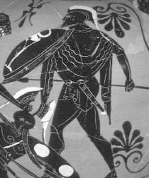

"İşinde çok ustalaşmış marangoz Argos'un yaptığı Argo adlı gemiyle elli kahraman, Altın Post'u almak üzere Gürcistan'a doğru yola çıktılar. İlkçağın bu çok ünlü serüveni, sayısız ozan ve öykücüye ve özellikle de en ünlü tragedya yazarlarına bitip tükenmez esin kaynağı oldu..."
Yunanistan'daki İolkos kentini, Pelyas (Pelias) adlı acımasız mı acımasız bir kral yönetmekteydi. Kurulduğu taht bile gerçekte ağabeyinin hakkıydı! Üstelik Pelyas; kardeşinin tahtına el koymakla yetinmeyip onu da karısını da saraydan kovmuştu! Haliyle onlar da bir köşeye çekilip kendi hallerinde, ama kralın saldığı korkuların tedirginliği içinde yaşıyorlardı hep...
Saraydan kovulan bu çiftin İyason adında bir bebekleri oldu... Ne var ki kral Pelyas da, "ileride tahtımı elimden almaya kalkar" korkusuyla, kardeşinin bu yeni doğan bebeği için birtakım düzenler, kötülükler kurmaya başladı kafasında... Acımasız kralın bu yollu bir şeyler düşünebileceğini bebeğin babası ve anası da sezinlediler. Bu yüzden bebeğin çok hasta olduğu söylentisini yaydılar ilkin halk arasında. Ve bir gece çocuklarını gizlice Atadam Heyron'a bırakıp geldiler... Sonra da onun öldüğü söylentisini çıkarıp bunu kralın kulağına da ulaştırdılar. Haliyle kendileri de geleneksel yas giysileriyle dolaşmaya başladılar... Heyron her ne kadar yarı-at, yarı-insan bedenli Kentaur denen bir yaratıksa da, çok bilgili ve erdemli bir eğiticiydi. Çocuğa hem çok iyi baktı, hem de onun eğitimiyle çok yakından ilgilendi...
Geçen zaman içinde yaptığı kötülükler yüzünden kral Pelyas'ın yüreğinde pişmanlığa benzer birtakım duygular uyanmaya, haksız olarak oturduğu tahttan kuşkulanmaya, başına bir şeyler gelebileceği olasılığından tedirgin olmaya başladı... Sonra da belki iyi şeyler duyup rahatlarım umuduyla, Apollon'un tapınağındaki biliciye başvurdu. Saltanatının daha ne kadar süreceğini sordu ona. "Tek ayağına sandal giymiş bir delikanlı senin tahtına kurulacak!" yanıtını vermekle yetindi bilici... Bu duyduklarından açıkseçik pek bir şey çıkaramadı kral; üstelik kafası da büsbütün karıştı...
Saltanatının sürekliliği için artık tanrıları hoş tutmaya çalışan kral Pelyas, bir gün denizler tanrısı Poseydon onuruna bir şölen düzenledi sarayında. İyason da bu arada çağrılanlar arasındaydı. Kral, bu delikanlı konusunda pek fazla bir şey bilmiyordu. Onun Atadam Heyron'un yanında büyüyüp ondan eğitim aldığını duymuştu yalnızca... Daha uzak geçmişi hakkında bir bilgisi yoktu.
Haliyle şölene çağrılı herkes gibi günü gelince İyason da giyinip kuşandı; yola koyuldu. Yolu üstündeki bir nehirden geçerken, eline aldığı sandallarından bir tekini sular aldı götürdü. Karaya çıktıktan sonra tek sandalını ayağına geçirip öylece saraya vardı. Kral Pelyas gelen konuklar arasında tek sandallı İyason'u görünce haliyle bir tuhaf oldu. Sonra da onu özel bir odaya çekti. Biraz hoşbeşten sonra; "Bak delikanlı," dedi soğukkanlılıkla. "Sen benim yerime kral olsaydın ve tanrı Apollon sana; çağırdıkların arasında ayağında tek sandalı olan birisi seni öldürecek deseydi, acaba sen ne yapardın?" Ayağı tek sandallı İyason da büyük bir rahatlıkla; "O adamı arar bulurdum. Sonra da o ünlü koçun Altın Post'unu aramaya gönderirdim!" yanıtını verdi.
Kral Pelyas, İyason'un bu sözlerini duyunca sevincinden havalara uçacaktı neredeyse! Hiç beklemeden; "Bak delikanlı," dedi. "Sen çok iyi birine benziyorsun... Sen bu Altın Post'u bulup sarayıma getirirsen, tacımı tahtımı sana bırakacağım. Üstelik seni çok güzel bir prensesle de evlendireceğim. Ben de rahat rahat köşeme çekilip son günlerimin tadını çıkaracağım!" İyason da serüvenler ardında koşmaktan hoşlandığı için, kralın önerisini sevinçle karşıladı. Oysaki Altın Post, kral Pelyas'ın umurunda bile değildi! Bütün amacı, elinden geldiğince İyason'u ülkesinden ve de sarayından uzak tutmaktı. Zaten Gürcistan'daki bu dillere destan Altın Post'u alıp getirmek bir insan gücünün ötesindeydi... O yüzden kral Pelyas, İyason'u kandırıp ondan kurtulduğunu düşünüyor, sevincinden içi içine sığmıyordu...
Hem serüvenler yaşama, hem de ün ve servete kavuşma tutkusuyla yanıp tutuşan İyason, bütün Yunanistan krallıklarına haber salıp Altın Post'u alıp getirme işinde gönüllü olacak kahramanlar aramaya başladı hemen. Çünkü bu Altın Post, eskilerin Kolhid (Kolkhid) dediği Gürcistan'da, deniz kıyısındaki bir kentteydi. Üstelik Yunanistan'dan kalkıp ta oralara varabilmek için çok sağlam bir gemi ve de çok güçlü kahramanların el ele vermesi gerekiyordu...
Bu serüvene ilgi duyan gönüllü kahramanların sayıları kısa sürede elliye ulaştı. Onların arasında kimler yoktu ki!.. Örneğin bir dağı bile yerinden sökecek ölçüde güçlü Herakles, liriyle ve ezgileriyle Ölüler Ülkesi'ne girip oranın acımasız tanrılarını yumuşatacak denli etkin müzisyen Orfeus vardı!.. Taht ve ün peşindeki İyason dışındaki bu kahramanların hiçbiri, aslında Altın Post'un ya da o ülkeden talan edilecek zenginliklerin peşinde değildi... Ama savaş tanrısı acımasız Ares'in bütün dünyaya meydan okuyaraktan egemenliği altında tuttuğu bu postu, onun elinden almaktı önemli olan. Böylece insanoğlunun isterse savaş tanrısını bile alt edebileceğini kanıtlamaktı onların amacı...
Artık bütün öngörülerin ötesinde ilgi gören Altın Post'u alıp getirme serüvenine başlayabilmek için, çok sağlam bir gemi yaptırmaya gelmişti sıra...

Savaş Tanrısı Ares